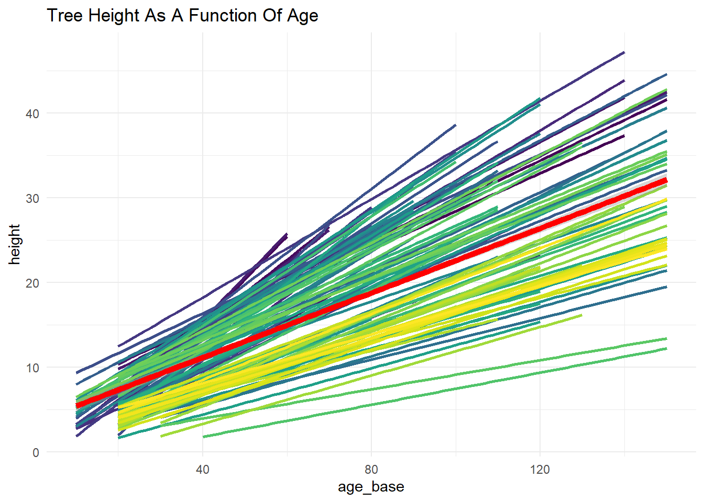
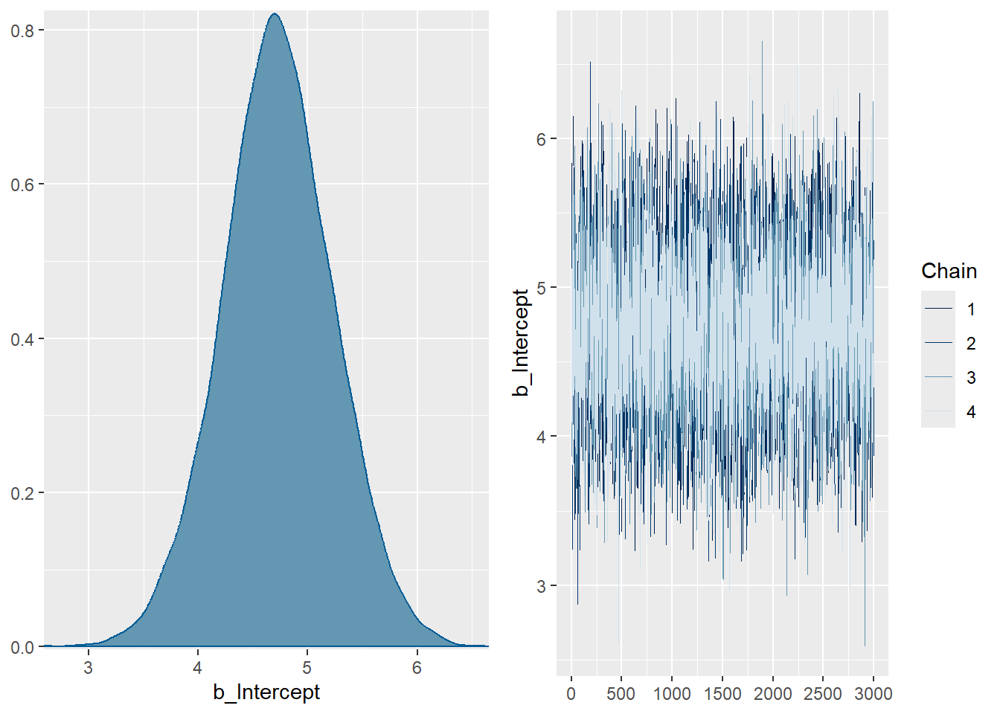
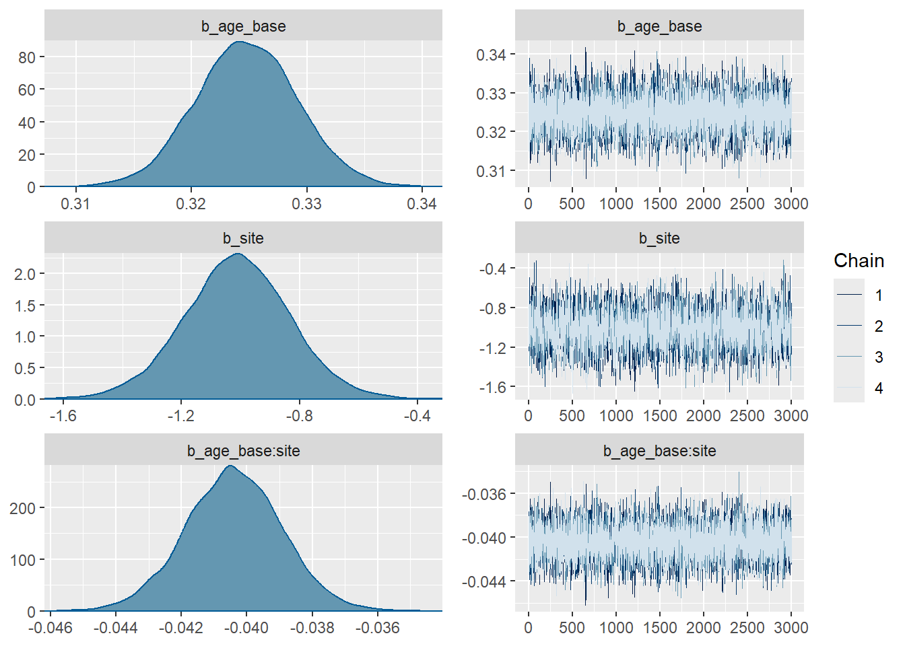
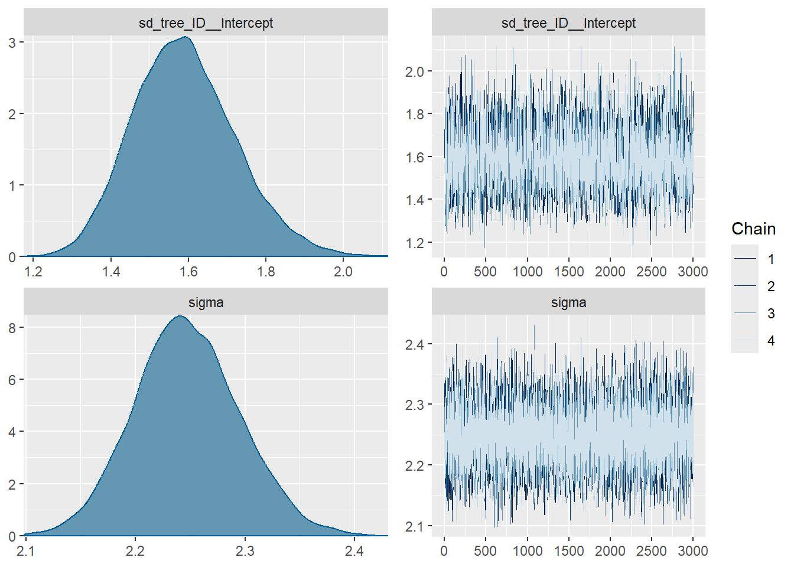

install.packages(c("lme4", "brms"))Bayesian Longitudinal Multilevel Models
Using brms / STAN
1 Set Up üå≤
You will need to install the relevant packages: lme4 for frequentist MLM, and brms, which also installs STAN, for Bayesian MLM.
2 Gutten Tree Data üå≤

The data used in this example are derived from the R package Functions and Datasets for “Forest Analytics with R”.
According to the documentation, the source of these data are: “von Guttenberg’s Norway spruce (Picea abies [L.] Karst) tree measurement data.”
The documentation goes on to further note that:
“The data are measures from 107 trees. The trees were selected as being of average size from healthy and well stocked stands in the Alps.”
3 Import The Data üå≤
library(haven)
gutten <- read_dta("gutten.dta")
gutten # A tibble: 1,200 × 9
site location tree age_base height dbh_cm volume age_bh tree_ID
<dbl+lbl> <dbl+lbl> <dbl> <dbl> <dbl> <dbl> <dbl> <dbl> <dbl+lbl>
1 1 [1] 1 [1] 1 20 4.2 4.6 5 9.67 1 [1.1]
2 1 [1] 1 [1] 1 30 9.3 10.2 38 19.7 1 [1.1]
3 1 [1] 1 [1] 1 40 14.9 14.9 123 29.7 1 [1.1]
4 1 [1] 1 [1] 1 50 19.7 18.3 263 39.7 1 [1.1]
5 1 [1] 1 [1] 1 60 23 20.7 400 49.7 1 [1.1]
6 1 [1] 1 [1] 1 70 25.8 22.6 555 59.7 1 [1.1]
7 1 [1] 1 [1] 1 80 27.4 24.1 688 69.7 1 [1.1]
8 1 [1] 1 [1] 1 90 28.8 25.5 820 79.7 1 [1.1]
9 1 [1] 1 [1] 1 100 30 26.5 928 89.7 1 [1.1]
10 1 [1] 1 [1] 1 110 30.9 27.3 1023 99.7 1 [1.1]
# ℹ 1,190 more rows4 Variables üå≤
site Growth quality class of the tree’s habitat. 5 levels.
location Distinguishes tree location. 7 levels.
tree An identifier for the tree within location.
age.base The tree age taken at ground level.
height Tree height, m.
dbh.cm Tree diameter, cm.
volume Tree volume.
age.bh Tree age taken at 1.3 m.
tree.ID A factor uniquely identifying the tree.
5 A Basic Multilevel Model üå≤
\[\text{height}_{it} = \beta_0 + \beta \text{agebase} + \beta \text{site} + \beta \text{agebase} \times \text{site} + u_{0 \text{ tree.ID}} + e_{it}\]
Both lmer (frequentist MLM) and brms (Bayesian MLM) use the idea of translating the above equation into a formula:
height ~ age_base + site + (1 | tree_ID)
6 Graph (Spaghetti Plot)
Let’s first graph the model to get a visual idea of likely model results.
Code
library(ggplot2)
ggplot(gutten,
aes(x = age_base, # x is tree age
y = height)) + # y is tree height
geom_smooth(aes(color = as.factor(tree_ID)),
method = "lm",
se = FALSE) + # linear model for each tree
geom_smooth(method = "lm",
color = "red",
size = 2) + # linear model
labs(title = "Tree Height As A Function Of Age") +
scale_color_viridis_d() + # nice graph colors for trees
theme_minimal() +
theme(legend.position = "none")
7 Frequentist Model in lmer üå≤
NB:
*provides both an interaction term and main effects.
library(lme4)
fit1 <- lmer(height ~ age_base * site + (1 | tree_ID),
data = gutten)
tab_model(fit1)| height | |||
|---|---|---|---|
| Predictors | Estimates | CI | p |
| (Intercept) | 4.74 | 3.76 – 5.71 | <0.001 |
| age.base | 0.32 | 0.32 – 0.33 | <0.001 |
| site | -1.01 | -1.36 – -0.67 | <0.001 |
| age_base:site | -0.04 | -0.04 – -0.04 | <0.001 |
| Random Effects | |||
| σ2 | 5.04 | ||
| τ00 tree_ID | 2.46 | ||
| ICC | 0.33 | ||
| N tree_ID | 107 | ||
| Observations | 1200 | ||
| Marginal R2 / Conditional R2 | 0.916 / 0.944 | ||
8 Bayesian Model With brms (Less Informative Default Priors) üå≤
The models below take a non-trivial amount of time to run.
library(brms)
fit2 <- brm(height ~ age_base * site + (1 | tree_ID),
data = gutten,
family = gaussian(),
warmup = 2000,
iter = 5000)
SAMPLING FOR MODEL 'anon_model' NOW (CHAIN 1).
Chain 1:
Chain 1: Gradient evaluation took 0.000283 seconds
Chain 1: 1000 transitions using 10 leapfrog steps per transition would take 2.83 seconds.
Chain 1: Adjust your expectations accordingly!
Chain 1:
Chain 1:
Chain 1: Iteration: 1 / 5000 [ 0%] (Warmup)
Chain 1: Iteration: 500 / 5000 [ 10%] (Warmup)
Chain 1: Iteration: 1000 / 5000 [ 20%] (Warmup)
Chain 1: Iteration: 1500 / 5000 [ 30%] (Warmup)
Chain 1: Iteration: 2000 / 5000 [ 40%] (Warmup)
Chain 1: Iteration: 2001 / 5000 [ 40%] (Sampling)
Chain 1: Iteration: 2500 / 5000 [ 50%] (Sampling)
Chain 1: Iteration: 3000 / 5000 [ 60%] (Sampling)
Chain 1: Iteration: 3500 / 5000 [ 70%] (Sampling)
Chain 1: Iteration: 4000 / 5000 [ 80%] (Sampling)
Chain 1: Iteration: 4500 / 5000 [ 90%] (Sampling)
Chain 1: Iteration: 5000 / 5000 [100%] (Sampling)
Chain 1:
Chain 1: Elapsed Time: 12.315 seconds (Warm-up)
Chain 1: 7.296 seconds (Sampling)
Chain 1: 19.611 seconds (Total)
Chain 1:
SAMPLING FOR MODEL 'anon_model' NOW (CHAIN 2).
Chain 2:
Chain 2: Gradient evaluation took 7.8e-05 seconds
Chain 2: 1000 transitions using 10 leapfrog steps per transition would take 0.78 seconds.
Chain 2: Adjust your expectations accordingly!
Chain 2:
Chain 2:
Chain 2: Iteration: 1 / 5000 [ 0%] (Warmup)
Chain 2: Iteration: 500 / 5000 [ 10%] (Warmup)
Chain 2: Iteration: 1000 / 5000 [ 20%] (Warmup)
Chain 2: Iteration: 1500 / 5000 [ 30%] (Warmup)
Chain 2: Iteration: 2000 / 5000 [ 40%] (Warmup)
Chain 2: Iteration: 2001 / 5000 [ 40%] (Sampling)
Chain 2: Iteration: 2500 / 5000 [ 50%] (Sampling)
Chain 2: Iteration: 3000 / 5000 [ 60%] (Sampling)
Chain 2: Iteration: 3500 / 5000 [ 70%] (Sampling)
Chain 2: Iteration: 4000 / 5000 [ 80%] (Sampling)
Chain 2: Iteration: 4500 / 5000 [ 90%] (Sampling)
Chain 2: Iteration: 5000 / 5000 [100%] (Sampling)
Chain 2:
Chain 2: Elapsed Time: 11.462 seconds (Warm-up)
Chain 2: 7.208 seconds (Sampling)
Chain 2: 18.67 seconds (Total)
Chain 2:
SAMPLING FOR MODEL 'anon_model' NOW (CHAIN 3).
Chain 3:
Chain 3: Gradient evaluation took 7.3e-05 seconds
Chain 3: 1000 transitions using 10 leapfrog steps per transition would take 0.73 seconds.
Chain 3: Adjust your expectations accordingly!
Chain 3:
Chain 3:
Chain 3: Iteration: 1 / 5000 [ 0%] (Warmup)
Chain 3: Iteration: 500 / 5000 [ 10%] (Warmup)
Chain 3: Iteration: 1000 / 5000 [ 20%] (Warmup)
Chain 3: Iteration: 1500 / 5000 [ 30%] (Warmup)
Chain 3: Iteration: 2000 / 5000 [ 40%] (Warmup)
Chain 3: Iteration: 2001 / 5000 [ 40%] (Sampling)
Chain 3: Iteration: 2500 / 5000 [ 50%] (Sampling)
Chain 3: Iteration: 3000 / 5000 [ 60%] (Sampling)
Chain 3: Iteration: 3500 / 5000 [ 70%] (Sampling)
Chain 3: Iteration: 4000 / 5000 [ 80%] (Sampling)
Chain 3: Iteration: 4500 / 5000 [ 90%] (Sampling)
Chain 3: Iteration: 5000 / 5000 [100%] (Sampling)
Chain 3:
Chain 3: Elapsed Time: 11.49 seconds (Warm-up)
Chain 3: 7.058 seconds (Sampling)
Chain 3: 18.548 seconds (Total)
Chain 3:
SAMPLING FOR MODEL 'anon_model' NOW (CHAIN 4).
Chain 4:
Chain 4: Gradient evaluation took 9e-05 seconds
Chain 4: 1000 transitions using 10 leapfrog steps per transition would take 0.9 seconds.
Chain 4: Adjust your expectations accordingly!
Chain 4:
Chain 4:
Chain 4: Iteration: 1 / 5000 [ 0%] (Warmup)
Chain 4: Iteration: 500 / 5000 [ 10%] (Warmup)
Chain 4: Iteration: 1000 / 5000 [ 20%] (Warmup)
Chain 4: Iteration: 1500 / 5000 [ 30%] (Warmup)
Chain 4: Iteration: 2000 / 5000 [ 40%] (Warmup)
Chain 4: Iteration: 2001 / 5000 [ 40%] (Sampling)
Chain 4: Iteration: 2500 / 5000 [ 50%] (Sampling)
Chain 4: Iteration: 3000 / 5000 [ 60%] (Sampling)
Chain 4: Iteration: 3500 / 5000 [ 70%] (Sampling)
Chain 4: Iteration: 4000 / 5000 [ 80%] (Sampling)
Chain 4: Iteration: 4500 / 5000 [ 90%] (Sampling)
Chain 4: Iteration: 5000 / 5000 [100%] (Sampling)
Chain 4:
Chain 4: Elapsed Time: 12.537 seconds (Warm-up)
Chain 4: 7.192 seconds (Sampling)
Chain 4: 19.729 seconds (Total)
Chain 4: tab_model(fit2)| height | ||
|---|---|---|
| Predictors | Estimates | CI (95%) |
| Intercept | 4.74 | 3.76 – 5.74 |
| age.base | 0.32 | 0.32 – 0.33 |
| site | -1.01 | -1.37 – -0.67 |
| age_base:site | -0.04 | -0.04 – -0.04 |
| Random Effects | ||
| σ2 | 5.05 | |
| τ00 tree_ID | 2.53 | |
| ICC | 0.33 | |
| N tree_ID | 107 | |
| Observations | 1200 | |
| Marginal R2 / Conditional R2 | 0.915 / 0.941 | |
9 Set Informative Priors üå≤
prior1 <- c(
prior(normal(0, 10), class = Intercept),
prior(normal(0, 10), class = b, coef = site) #,
# prior(cauchy(0, 10), class = sigma)
)10 Run The Model With More Informative Prior üå≤
fit3 <- brm(height ~ age_base * site + (1 | tree_ID),
data = gutten,
family = gaussian(),
prior = prior1,
warmup = 2000,
iter = 5000)
SAMPLING FOR MODEL 'anon_model' NOW (CHAIN 1).
Chain 1:
Chain 1: Gradient evaluation took 0.000275 seconds
Chain 1: 1000 transitions using 10 leapfrog steps per transition would take 2.75 seconds.
Chain 1: Adjust your expectations accordingly!
Chain 1:
Chain 1:
Chain 1: Iteration: 1 / 5000 [ 0%] (Warmup)
Chain 1: Iteration: 500 / 5000 [ 10%] (Warmup)
Chain 1: Iteration: 1000 / 5000 [ 20%] (Warmup)
Chain 1: Iteration: 1500 / 5000 [ 30%] (Warmup)
Chain 1: Iteration: 2000 / 5000 [ 40%] (Warmup)
Chain 1: Iteration: 2001 / 5000 [ 40%] (Sampling)
Chain 1: Iteration: 2500 / 5000 [ 50%] (Sampling)
Chain 1: Iteration: 3000 / 5000 [ 60%] (Sampling)
Chain 1: Iteration: 3500 / 5000 [ 70%] (Sampling)
Chain 1: Iteration: 4000 / 5000 [ 80%] (Sampling)
Chain 1: Iteration: 4500 / 5000 [ 90%] (Sampling)
Chain 1: Iteration: 5000 / 5000 [100%] (Sampling)
Chain 1:
Chain 1: Elapsed Time: 13.036 seconds (Warm-up)
Chain 1: 6.752 seconds (Sampling)
Chain 1: 19.788 seconds (Total)
Chain 1:
SAMPLING FOR MODEL 'anon_model' NOW (CHAIN 2).
Chain 2:
Chain 2: Gradient evaluation took 7.1e-05 seconds
Chain 2: 1000 transitions using 10 leapfrog steps per transition would take 0.71 seconds.
Chain 2: Adjust your expectations accordingly!
Chain 2:
Chain 2:
Chain 2: Iteration: 1 / 5000 [ 0%] (Warmup)
Chain 2: Iteration: 500 / 5000 [ 10%] (Warmup)
Chain 2: Iteration: 1000 / 5000 [ 20%] (Warmup)
Chain 2: Iteration: 1500 / 5000 [ 30%] (Warmup)
Chain 2: Iteration: 2000 / 5000 [ 40%] (Warmup)
Chain 2: Iteration: 2001 / 5000 [ 40%] (Sampling)
Chain 2: Iteration: 2500 / 5000 [ 50%] (Sampling)
Chain 2: Iteration: 3000 / 5000 [ 60%] (Sampling)
Chain 2: Iteration: 3500 / 5000 [ 70%] (Sampling)
Chain 2: Iteration: 4000 / 5000 [ 80%] (Sampling)
Chain 2: Iteration: 4500 / 5000 [ 90%] (Sampling)
Chain 2: Iteration: 5000 / 5000 [100%] (Sampling)
Chain 2:
Chain 2: Elapsed Time: 12.69 seconds (Warm-up)
Chain 2: 7.334 seconds (Sampling)
Chain 2: 20.024 seconds (Total)
Chain 2:
SAMPLING FOR MODEL 'anon_model' NOW (CHAIN 3).
Chain 3:
Chain 3: Gradient evaluation took 0.000161 seconds
Chain 3: 1000 transitions using 10 leapfrog steps per transition would take 1.61 seconds.
Chain 3: Adjust your expectations accordingly!
Chain 3:
Chain 3:
Chain 3: Iteration: 1 / 5000 [ 0%] (Warmup)
Chain 3: Iteration: 500 / 5000 [ 10%] (Warmup)
Chain 3: Iteration: 1000 / 5000 [ 20%] (Warmup)
Chain 3: Iteration: 1500 / 5000 [ 30%] (Warmup)
Chain 3: Iteration: 2000 / 5000 [ 40%] (Warmup)
Chain 3: Iteration: 2001 / 5000 [ 40%] (Sampling)
Chain 3: Iteration: 2500 / 5000 [ 50%] (Sampling)
Chain 3: Iteration: 3000 / 5000 [ 60%] (Sampling)
Chain 3: Iteration: 3500 / 5000 [ 70%] (Sampling)
Chain 3: Iteration: 4000 / 5000 [ 80%] (Sampling)
Chain 3: Iteration: 4500 / 5000 [ 90%] (Sampling)
Chain 3: Iteration: 5000 / 5000 [100%] (Sampling)
Chain 3:
Chain 3: Elapsed Time: 11.387 seconds (Warm-up)
Chain 3: 7.438 seconds (Sampling)
Chain 3: 18.825 seconds (Total)
Chain 3:
SAMPLING FOR MODEL 'anon_model' NOW (CHAIN 4).
Chain 4:
Chain 4: Gradient evaluation took 7.2e-05 seconds
Chain 4: 1000 transitions using 10 leapfrog steps per transition would take 0.72 seconds.
Chain 4: Adjust your expectations accordingly!
Chain 4:
Chain 4:
Chain 4: Iteration: 1 / 5000 [ 0%] (Warmup)
Chain 4: Iteration: 500 / 5000 [ 10%] (Warmup)
Chain 4: Iteration: 1000 / 5000 [ 20%] (Warmup)
Chain 4: Iteration: 1500 / 5000 [ 30%] (Warmup)
Chain 4: Iteration: 2000 / 5000 [ 40%] (Warmup)
Chain 4: Iteration: 2001 / 5000 [ 40%] (Sampling)
Chain 4: Iteration: 2500 / 5000 [ 50%] (Sampling)
Chain 4: Iteration: 3000 / 5000 [ 60%] (Sampling)
Chain 4: Iteration: 3500 / 5000 [ 70%] (Sampling)
Chain 4: Iteration: 4000 / 5000 [ 80%] (Sampling)
Chain 4: Iteration: 4500 / 5000 [ 90%] (Sampling)
Chain 4: Iteration: 5000 / 5000 [100%] (Sampling)
Chain 4:
Chain 4: Elapsed Time: 10.636 seconds (Warm-up)
Chain 4: 6.933 seconds (Sampling)
Chain 4: 17.569 seconds (Total)
Chain 4: tab_model(fit3)| height | ||
|---|---|---|
| Predictors | Estimates | CI (95%) |
| Intercept | 4.72 | 3.72 – 5.73 |
| age.base | 0.32 | 0.32 – 0.33 |
| site | -1.01 | -1.37 – -0.66 |
| age_base:site | -0.04 | -0.04 – -0.04 |
| Random Effects | ||
| σ2 | 5.05 | |
| τ00 tree_ID | 2.53 | |
| ICC | 0.33 | |
| N tree_ID | 107 | |
| Observations | 1200 | |
| Marginal R2 / Conditional R2 | 0.915 / 0.941 | |
11 Plot Posterior Distributions and Trace Plots üå≤
plot(fit3)will give me a reasonable plot of every parameter, but the layout may not be optimal. I am using separate plot calls below, but to do so, I need to know the names of the parameters, which can be tricky inbrms. One way to do this is to useplot(fit3)to see all the parameter names, and then divide the singleplotcall into multipleplotcalls to improve the layout.
# plot(fit3)
plot(fit3, variable = c("b_Intercept"))
plot(fit3,
variable = c("b_age_base",
"b_site",
"b_age_base:site")) # regression slopes
plot(fit3, variable = c("sd_tree_ID__Intercept",
"sigma")) # variance parameters
12 Compare All 3 Models üå≤
tab_model(fit1, fit2, fit3,
dv.labels = c("lmer", "brms default priors", "brms informative priors"),
show.se = TRUE,
show.ci = 0.95,
show.stat = TRUE)| lmer | brms default priors | brms informative priors | |||||||||
|---|---|---|---|---|---|---|---|---|---|---|---|
| Predictors | Estimates | std. Error | CI | Statistic | p | Estimates | std. Error | CI (95%) | Estimates | std. Error | CI (95%) |
| (Intercept) | 4.74 | 0.50 | 3.76 – 5.71 | 9.52 | <0.001 | ||||||
| age.base | 0.32 | 0.00 | 0.32 – 0.33 | 72.99 | <0.001 | 0.32 | 0.00 | 0.32 – 0.33 | 0.32 | 0.00 | 0.32 – 0.33 |
| site | -1.01 | 0.18 | -1.36 – -0.67 | -5.79 | <0.001 | -1.01 | 0.18 | -1.37 – -0.67 | -1.01 | 0.17 | -1.37 – -0.66 |
| age_base:site | -0.04 | 0.00 | -0.04 – -0.04 | -27.15 | <0.001 | -0.04 | 0.00 | -0.04 – -0.04 | -0.04 | 0.00 | -0.04 – -0.04 |
| Intercept | 4.74 | 0.51 | 3.76 – 5.74 | 4.72 | 0.49 | 3.72 – 5.73 | |||||
| Random Effects | |||||||||||
| σ2 | 5.04 | 5.05 | 5.05 | ||||||||
| τ00 | 2.46 tree_ID | 2.53 tree_ID | 2.53 tree_ID | ||||||||
| ICC | 0.33 | 0.33 | 0.33 | ||||||||
| N | 107 tree_ID | 107 tree_ID | 107 tree_ID | ||||||||
| Observations | 1200 | 1200 | 1200 | ||||||||
| Marginal R2 / Conditional R2 | 0.916 / 0.944 | 0.915 / 0.941 | 0.915 / 0.941 | ||||||||